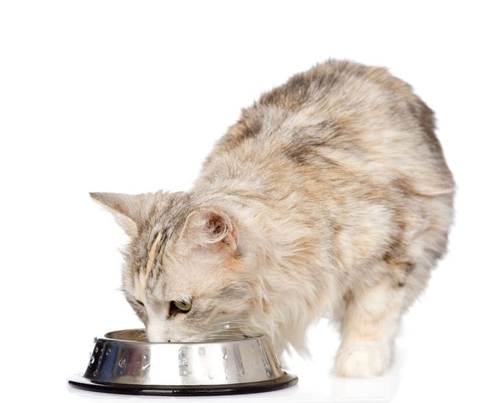

Gatos
ALIMENTACIÓN
Las opciones alimenticias varían: el alimento seco es práctico pero bajo en humedad, mientras que el alimento húmedo hidrata y despierta su apetito. Algunos optan por dietas crudas (BARF), pero estas requieren cuidados especiales para evitar infecciones.
Es fundamental ajustar la cantidad según la edad y el nivel de actividad: los gatitos necesitan varias comidas pequeñas al día, mientras que los adultos suelen conformarse con dos. Además, es vital mantener agua fresca siempre disponible.
No todo lo que parece apetitoso es seguro para ellos: alimentos como el chocolate, el ajo o los lácteos pueden ser tóxicos o causar malestar. Alimentar a un gato no es solo cubrir una necesidad, sino cuidar su esencia y su bienestar.
